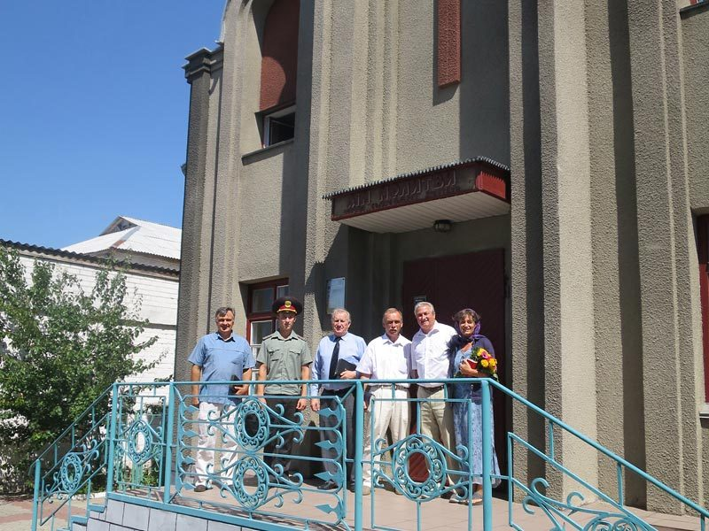
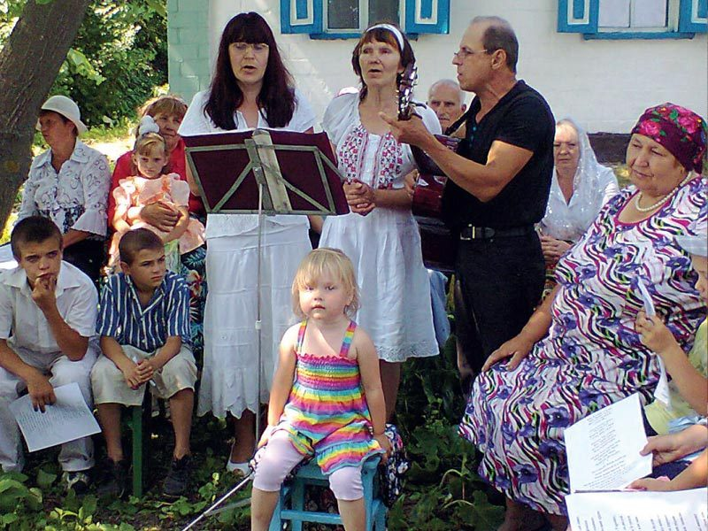
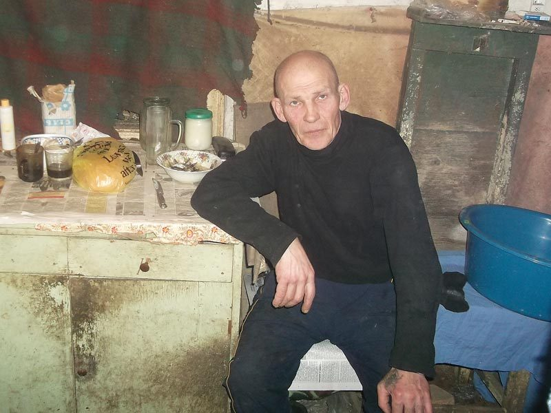
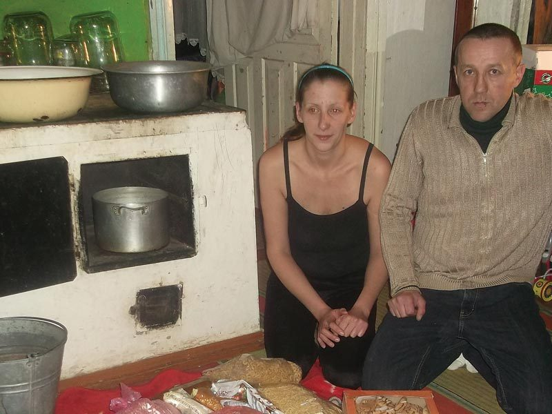
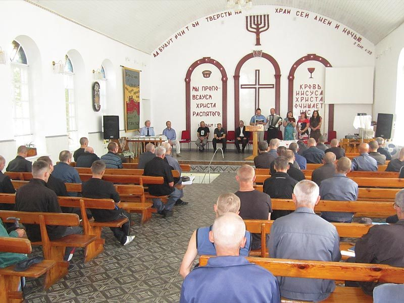

For the men inside Ukraine's prisons, Hope Now is often the first to bring good news through the gate. What began in a single prison in 1992 has grown into churches behind the walls, faithful local workers, and friendships that outlast a sentence.
Prison life
Under Communism, Christians were sent to prison for their faith. Today the Ukrainian Constitution allows freedom of religion, and Hope Now was instrumental in establishing chapels and churches inside prisons that were once closed to the Gospel.
Hundreds of inmates have heard the good news this way and responded — and the care doesn't stop at the gate. Leaving prison with a new faith but nowhere to turn is hard, so the support carries on afterwards.

Prison 62
Our Ukrainian prison work began in 1992 at Prison 62. Today the inmates there have a purpose-built church to meet in.
In November 2006 Col Alexander Tarasenko and Anatoliy Perepilitsa were appointed to start two new, independent prison ministries — work they continue today with substantial support from Hope Now.


New Life Village
Two former prisoners, Dima and Svieta, are leading the way in New Life Village — building a church and getting to know their neighbours.
Svieta works as a hairdresser, and uses the chair as a place to talk about her faith with everyone who comes to her.


Why it matters
How you can help
Your support keeps churches running inside the prisons, backs the workers who lead them, and stands by men rebuilding their lives on the outside.